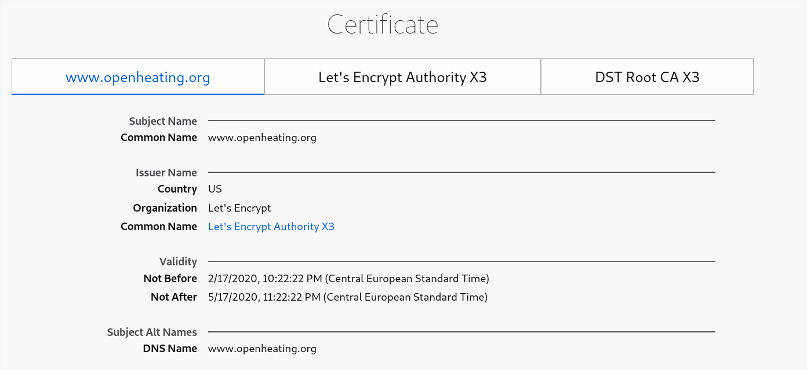

Github Pages with Custom Domain: SSL_ERROR_BAD_CERT_DOMAIN¶
Domain
faschingbauer.me: SSL problemsApex domain with SSL https:://faschingbauer.me leads to
SSL_ERROR_BAD_CERT_DOMAINApparently this is because it comes with a certificate whose Subject Name is
www.github.com
Subdomain works: https:://www.faschingbauer.me
Subject Name is
www.faschingbauer.me
Domain
opensource.org: no SSL problemshttps://opensource.orgredirects tohttps://www.opensource.org.Both come with certificate for
www.opensource.org.
Ok on https://openheating.org and https://www.openheating.org¶
On OpenHeating there is no problem. It redirects to https://www.openheating.org, and the certificate of that is

Fix Fucking Shit¶
Todo
more here
rm CNAME
wait
add CNAME again
try faschingbauer.me. does not work
try www.faschingbauer.me still works